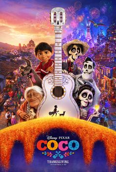

Coco

Terlepas dari larangan musik yang membingungkan keluarganya, Miguel bermimpi untuk menjadi musisi berprestasi seperti idolanya, Ernesto de la Cruz. Putus asa untuk membuktikan bakatnya, Miguel menemukan dirinya berada di alam baka yang menakjubkan dan penuh warna setelah serangkaian peristiwa misterius. Sepanjang jalan, ia bertemu dengan penipu menawan Hector, dan bersama-sama, mereka memulai perjalanan yang luar biasa untuk membuka kisah sebenarnya di balik sejarah keluarga Miguel.
Tanggal rilis:22 November 2017 (Indonesia)
Sutradara: Adrian Molina, Lee Unkrich
Penghargaan: Academy Award untuk Film Animasi Terbaik, LAINNYA
Bahasa: Bahasa Spanyol, Inggris